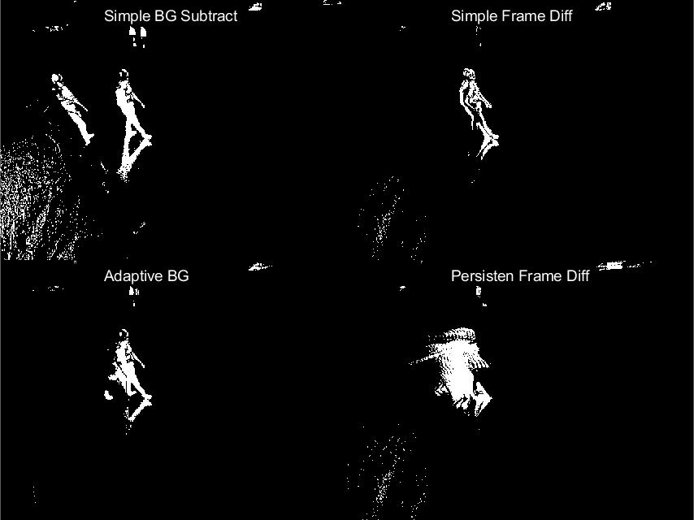

Five things building a VLM from scratch taught me
For the last while I've been trying to do something a little unreasonable: get a vision-language model to do real work using a MacBook Pro and datasets I mostly built myself. It's nowhere near frontier — that was never the point. The point was to understand every piece, and the lessons came faster than the wins.

1. The data is the model
I spent weeks on architecture and days on data, and got it exactly backwards. The single biggest jump came from a from-scratch 295M-token dataset built around the MS-COCO categories — not from any clever layer. Once the data was good, mediocre architectures started working.
2. Small, stable beats big, flaky
I burned a lot of time chasing a bigger language model that never trained stably. The thing that actually worked was boring: a small, stable LM I found by probing candidates, then scaling the cross-attention learning rate carefully. The lesson, again:
A model you can train twice and get the same result is worth more than a better model you can train once.
3. The bridge is the hard part
Connecting a vision encoder to a language model is where most of the real engineering lives. What finally clicked for me was a combination of three things:
- Question-conditioned cross-attention — let the question decide what to look at.
- Prefix calibration — so the LM doesn't ignore the visual tokens entirely.
- Adapters — small, cheap, and surprisingly effective for alignment.
4. Regularization can be free quality
One of the more satisfying results: applying an SSL-style regularizer to the VAE gave about +8%
on linear-probe scores for essentially no extra compute. A reminder that not every gain has to come from scale.
A note on measuring it
None of these conclusions would mean anything without a way to measure them — which is its own rabbit hole. I wrote about the eval side separately in Cheap evals that actually catch regressions.
5. Doing it the hard way is the point
Would I recommend building a VLM from scratch to ship a product? Absolutely not — use the frontier models. But as a way to actually understand how these systems fit together, nothing else has come close.
If you're poking at something similar, I'd genuinely love to compare notes — drop me a line.